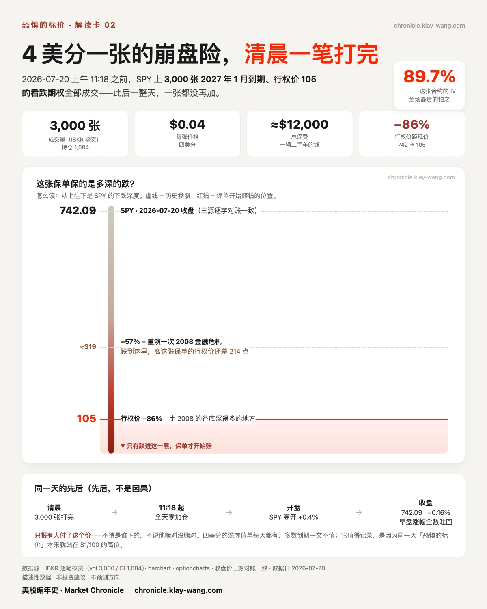
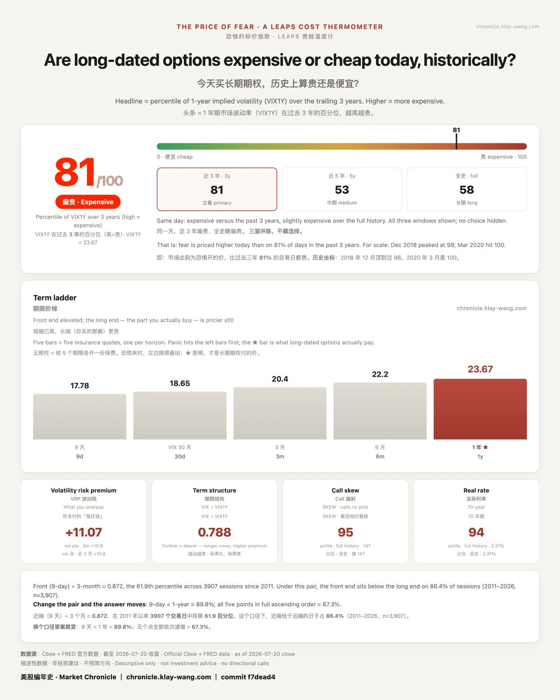
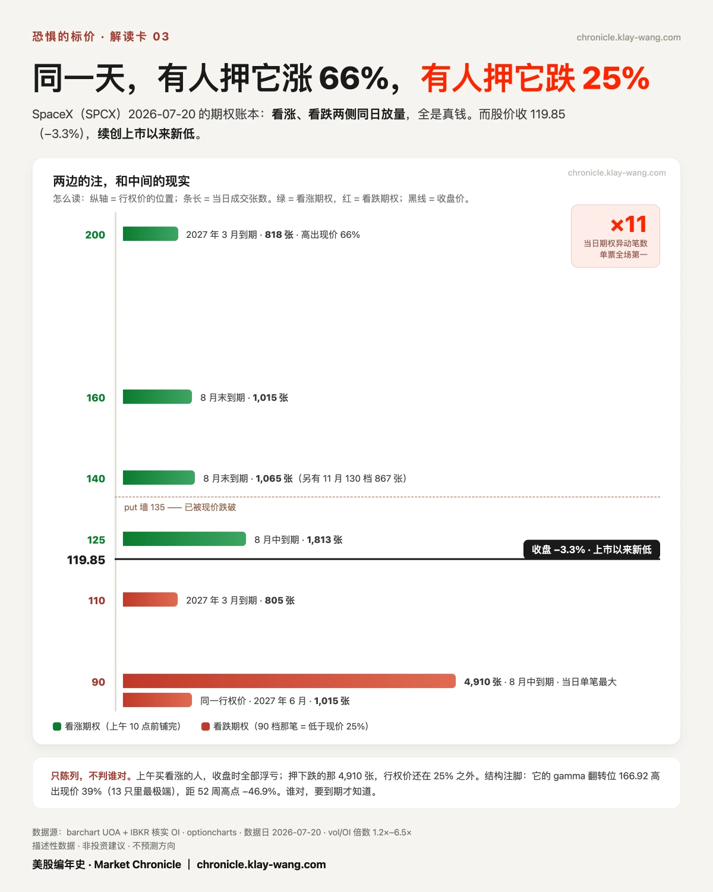

先说一笔小得离谱、但是又贵得离谱的交易。
2026.07.20，有人买了3000 张 2027 年 1 月到期、行权价105 的SPY 的看跌期权。每张4美分，一共约 1.2 万美元。105是什么概念？比SPY现价低了 86%。
这张合约的隐含波动率 89.7%，是全场最贵的怕之一。

怎么理解呢？有人花一万二，给天塌下来买了张保险。平时几乎不赔、真出事赔得极多，一张纯粹的崩盘险。IBKR 逐笔核过，成交 3000、持仓 1084，是真单不是数据毛刺；而且它的成交量一直卡在 3000：即上午 11 点 18 分之前就全部打完、之后一整天没再加一张。天没亮就下完的决断。
我只报这件事发生了，不猜是谁下的、也不说他赌对没赌对。事实的先后是这样：这笔保单打完之后，大盘高开低走、然后卖了一整天。
把它放进坐标里就没那么孤单了。
2026.07.20 的恐惧的标价是 81/100:一年期的波动率排到过去三年的第 81 个百分位，比八成的日子都贵。整个市场给一年后的怕开的价，本来就在近三年的高位；那张崩盘险，只是这口价里最扎眼的一笔。

至于那一整天：SPY 盘前还 +0.4%、美光一度冲到 +3.9%，一副高开修复的样子；到收盘 SPY 742.09（−0.16%）、QQQ 696.06（−0.03%），早上的涨全数吐了回去。11 只票的当日到期梯子，6只收在贴着低点的那一侧，只有微软全场逆势收在高位（+2.15%，它那张当天到期的 390 看涨期权涨了95%)。
长端还有另一笔防守：QQQ 上出现 2006张 2028 年 6 月到期的 650 看跌期权:两年后的下行对冲。加上 SPY 那张崩盘险，长端在一点点买保护。这是描述，不是判断。
单只股票这边，最有趣的是 SpaceX。2026.07.20 它一只票占了全场11笔期权异动：上午 10 点前，有人从8月一路铺到2027年3月买看涨:最远那笔行权价 200，高出现价 66%；同一天，也有人买了 4910张行权价90的看跌期权，低于现价 25%，是当日最大的一笔。

两边都是真钱。而股价收 119.85，跌 3.3%，续创上市以来新低。上午买看涨的人，收盘时全部浮亏。谁对，要到期才知道。
还有一件下周见分晓的事：微软、Meta、闪迪三只的一年期波动率百分位已经顶到 100，美光 99:四只票在全年最贵的位置上走进财报周，英伟达反而是全组最便宜的（37.9）。周三 GOOGL 和 TSLA 先开牌。